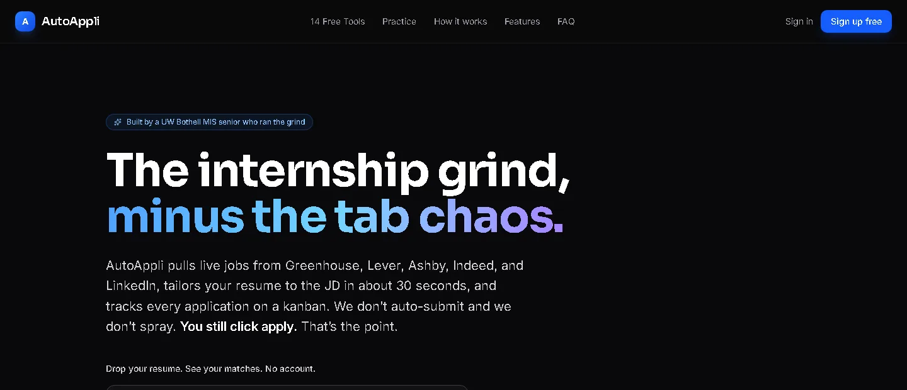
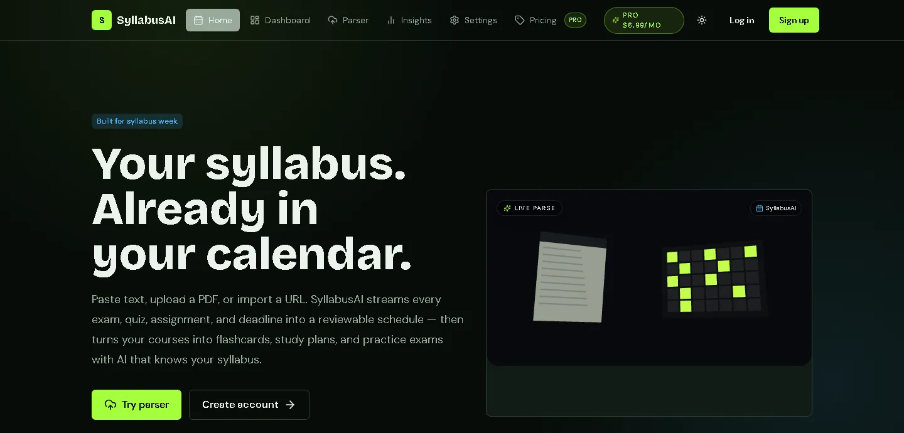

AutoAppli
A job-search tracker that shows where an application pipeline is leaking. About 400 weekly users.
Data and business analyst. AI MarTech Intern at Coca-Cola this past summer.
Graduating from UW Bothell in June 2027. Open to full-time analyst roles anywhere in the U.S.
01 · The Coca-Cola Company, Summer 2026
02 · Quadcore Innovations, 2025 to 2026
~100 tickets
one crash patheverything else
03 · Independent research, 2026
In [1]: backtest(paper=True)
+7.7%
In [2]: brier(contested) # lower is better
0 perfect1 always wrong
Brier = (forecast − outcome)², averaged over markets.
04 · SQL study, 620 orders
CASE WHEN order_count = 1 THEN 'One-time buyer' WHEN order_count BETWEEN 2 AND 3 THEN 'Repeat buyer' ELSE 'Loyal customer (4+)' END AS segment
| segment | buyers | revenue |
|---|---|---|
| One-time | 19.0% | 7.5% |
| Repeat | 47.6% | 38.1% |
| Loyal (4+) | 33.3% | 54.4% |
Buyers with at least one order that was not cancelled or refunded: 189 buyers, 577 orders.

A job-search tracker that shows where an application pipeline is leaking. About 400 weekly users.

Turns a syllabus into dated calendar deadlines. I built and ran it from March to August 2026, with 1,055 tests.
NDCG@10, higher is better.
An open-source harness that scores how well a search system finds the right documents, on BEIR SciFact.
Seven live indicators from the Federal Reserve’s FRED API in Python and Streamlit, with recessions shaded.
Nine years of rent, income, vacancy and homelessness data, modeled in R and published in Tableau.
I like the part of analysis most people skip: checking whether the number is right before anyone acts on it.
I study Management Information Systems at the University of Washington Bothell, with minors in Data Analytics and Economics. Major GPA: 3.7, Dean’s List 2024, 2025 and 2026. I graduate in June 2027.
U.S. citizen. I prefer the Pacific Northwest or the Bay Area and will relocate anywhere in the U.S. for the right team.
SQL (PostgreSQL, SQL Server) · Python (pandas, Streamlit) · R · Excel · Power BI and DAX · Tableau · Azure OpenAI · Claude API
Microsoft Certified: Power BI Data Analyst · Anthropic: AI Fluency · First place, CED Finance Case Competition · 14th of 1,983, HackerRank Orchestrate